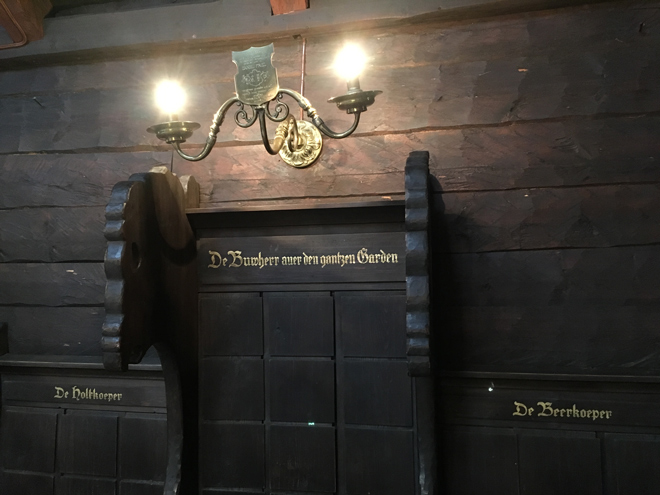
Some 900 years ago, merchants used to sail the Baltic and North Seas en masse in order to protect themselves from attack, loss of cargo and, in a worst case scenario, their own lives. A group of this kind was called a Hanse and the merchants Hanseats, or members of the Hanseatic League.
Their trading route extended from Novgorod (in modern-day Russia) via London to Bruges (Belgium). They began to trade in many port cities along the route and, by the 1240s, had established a presence in Bergen where their assembly rooms were called the Schøtstuene. This is a recreation of the medieval hall.
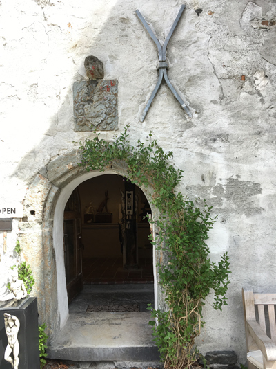
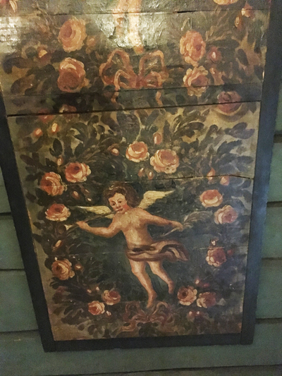
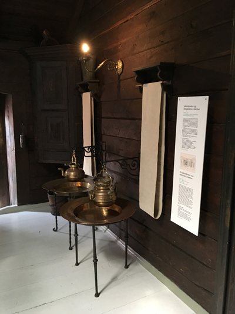
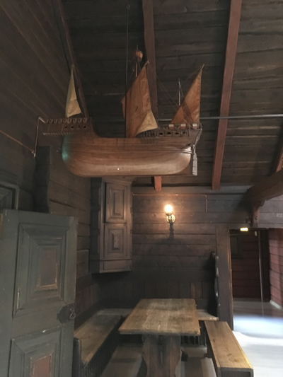
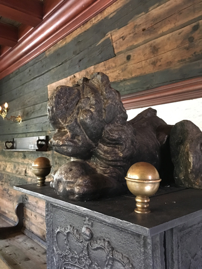
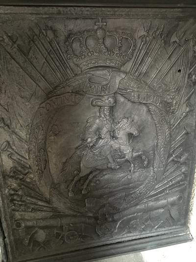
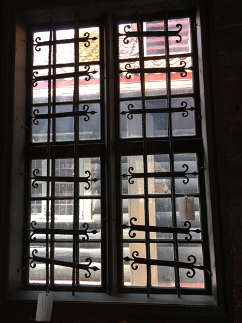
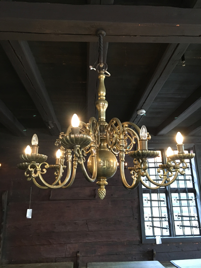
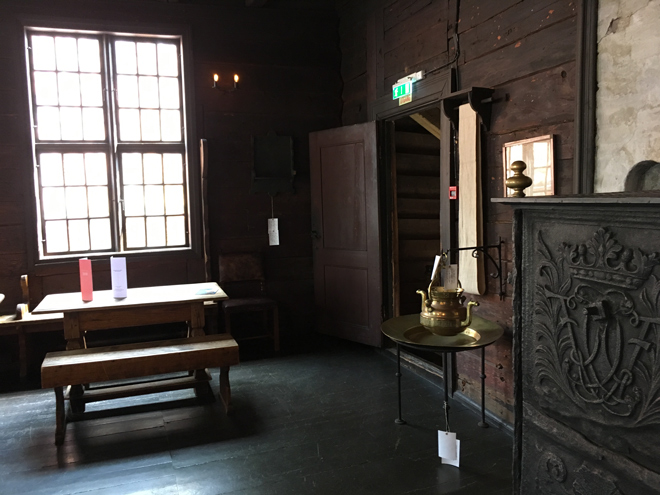
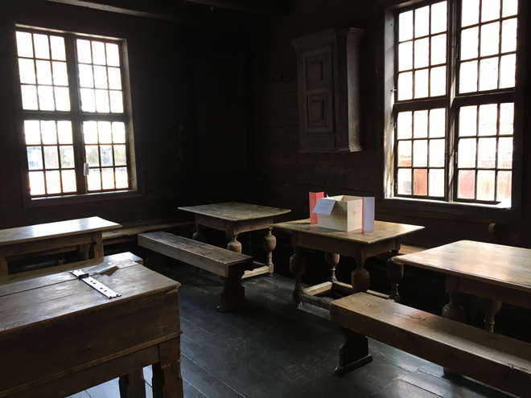
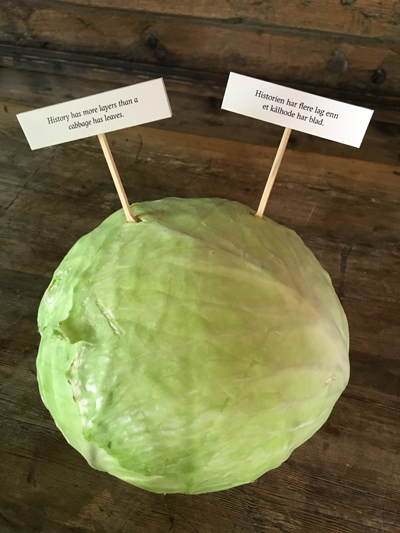
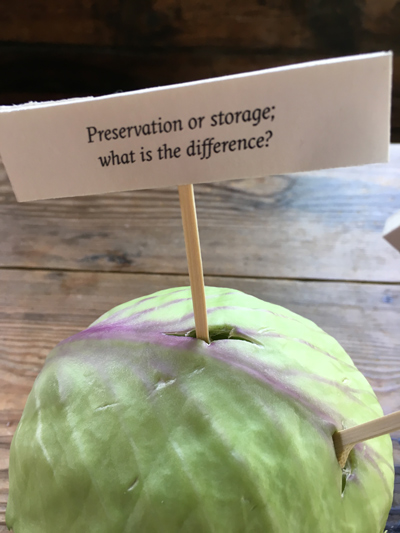
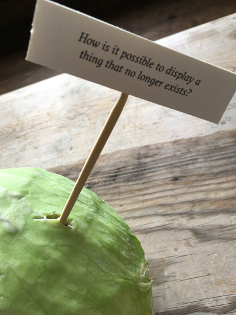
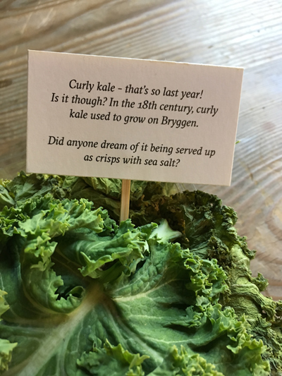
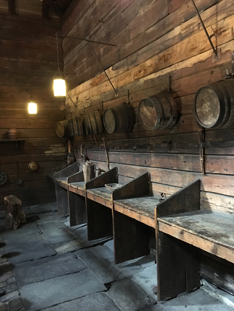
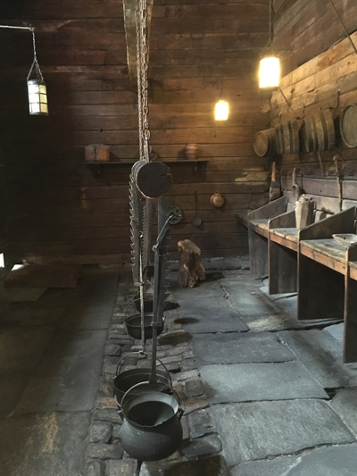
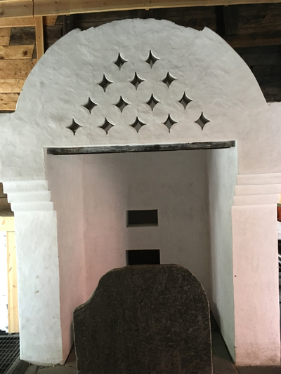
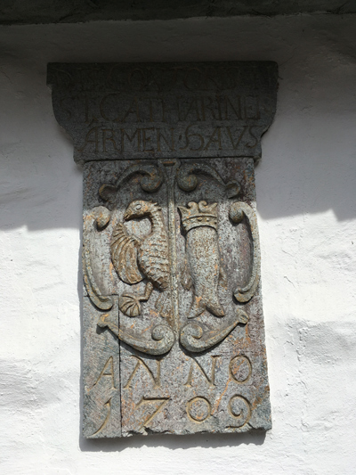
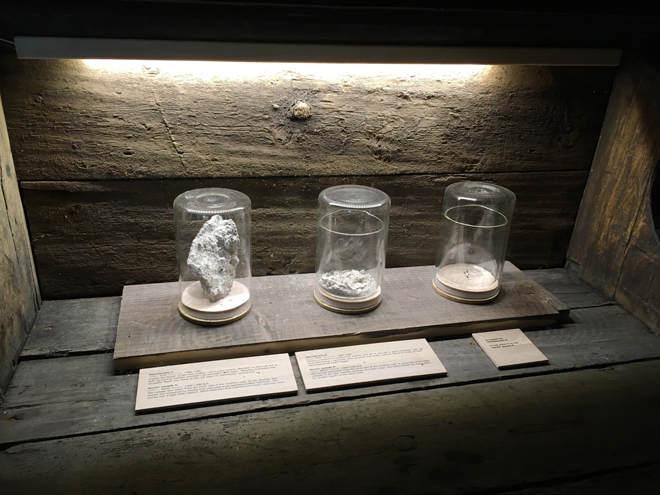
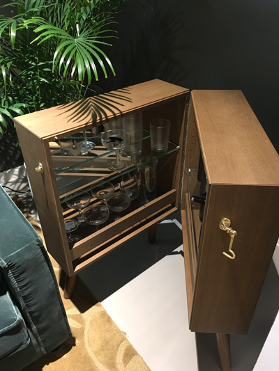
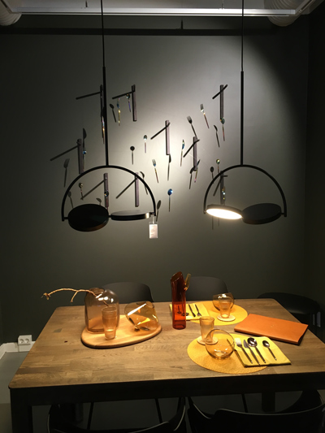
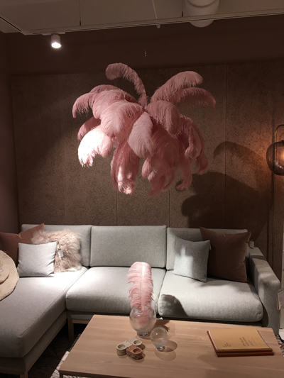
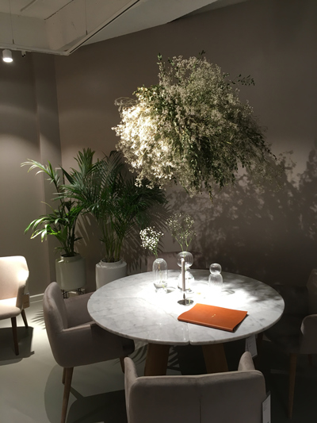
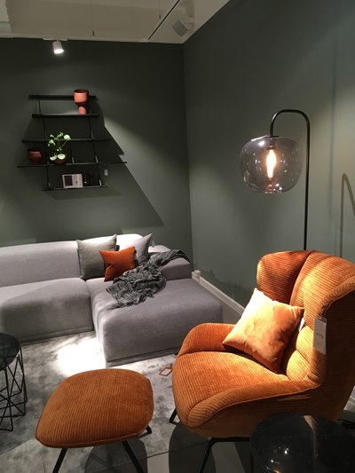
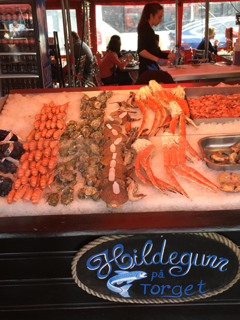
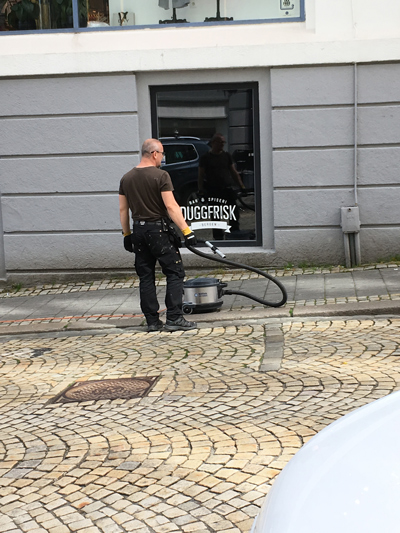
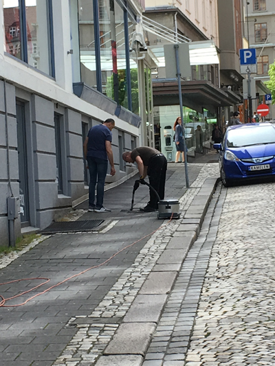